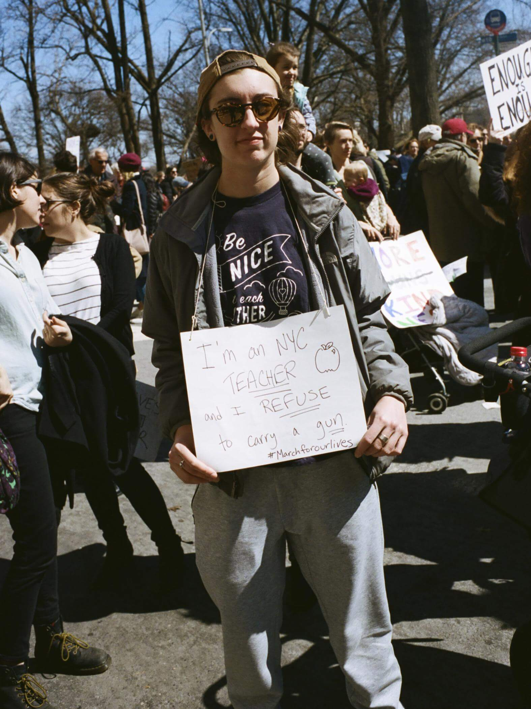

CULTURE - POWERFUL PORTRAITS OF NEW
YORKERS FIGHTING FOR GUN CONTROL
The mood aboard the overcrowded subway cars heading to
72nd Street on Saturday was one that’s rare when riding the MTA, and even rarer
when talking gun control in America. It was optimism. The school shooting at Marjory
Stoneman Douglas High School last month was horrific beyond words, claiming the lives
of 17 students and affecting those of countless more. Kids of all races and genders waved signs that screamed stats
— black students are three times as likely as white students to experience gun violence at school,
and it’s easier to buy a gun in Alabama than it is to buy a dildo — while veterans and cab drivers rallied behind them.

Gabby Steinfeld, 24, spanish teacher
Gabby Steinfeld, 24, spanish teacher
Why are you marching today?
When they started talking about arming
teachers, it kind of got to me. That’s me. If that legislation got
pushed through, that’s something that directly affects me, and directly
affects my students. That was not okay with me.
How do you think America would be different if stricter gun control laws were enacted?
If there was more gun control and more focus on preventing people from getting guns in
this country, it would drastically change the amount of shootings that are happening in this country,
as well as change the culture surrounding guns in this entire nation.
What message do you want to send to our elected officials?
Think about what you’re doing when
you’re talking about gun control, and how it’s actually going to affect people in this country.
Specifically, students in schools and teachers in schools, but also people who don’t think it’s
going to affect them. Gun violence affects everyone in this country, and it’s rocking the whole
nation right now, and it needs to be stopped.
If you could choose the US president, who would they be?
People have been talking about Oprah,
which I think would be pretty cool, but I think that when it comes down to people who lead our nation,
it needs to be someone who’s qualified, smart, and in touch with what’s going on in the country,
which is currently something that’s not happening.
Sona, 29, student
Why are you marching today?
Because this is absolute and utter bullshit.
We’re so angry. We’re also marching today because there are a lot of people who can’t march today. It’s
really important as we look around to ask who is able to access this space and who is not, and whether
the people marching are those most affected by gun violence. It’s marching as an intersectional practice,
and questioning protesting as we protest.
How do you think America would be different if stricter gun control laws were enacted?
We would have less deaths. We would have less people in jail who don’t belong there. It would fundamentally
change how we think about power, and how we think about what it means to be strong, and what it means to take
care of each other. We don’t have to take care of each other through violence. Fundamentally, it would help
mass incarceration, because a lot of people are being put away for stupid shit.
What message do you want to send to our elected officials?
You need to start doing your job.
Because this is your job. We’re telling you what is okay and what isn’t okay. We elected you, so while I
understand this is very complicated, it’s also very clear what they right and wrong thing is. Considering
you’ve decided to make this your job, you need to do it correctly.

Emily Ling, 19, student
Why are you marching today?
It’s a good platform to raise awareness
of different problems that are long standing. I don’t think mass shootings are a new thing. They’ve
been around since Columbine. I don’t think gun violence is very new. Because of the awareness that
Parkland brought to the issue, this march can bring light to marginalized communities that don’t
get this luxury.
How do you think America would be different if stricter gun control laws were enacted?
I don’t really know how it would be different. I’m only 19 years old and my whole life has been shaped by
mass shootings and the fear of not being safe anywhere I go. I’m hoping it will change for the younger
generations, where they don’t have to be scared to go to school or walk down the streets of their
neighborhoods or to go to a movie theater.
What message do you want to send to our elected officials?
This is a tipping point.
You can either listen to the people or get kicked out of office. I think we should replace all of them,
so I don’t really have anything nice to say.
Brittany Isaac, 18, student
Why are you marching today?
I’m marching to protect the rights of kids
over gun rights and NRA lobbyists having control of the government.
How do you think America would be different if stricter gun control laws were enacted?
It would just feel safer if there were more restrictions, and I think there would be less crime.
What message do you want to send to our elected officials?
Stop taking money from the NRA. I get that you need money for your campaign, but you can’t take blood money.
Emmet Townsend, 18, works for a non-profit
Why are you marching today?
I helped organize the walkout
at my school for the national walkout movement that happened a couple of weeks ago, and
it really moved me to see everyone’s passion for what’s going on.
How do you think America would be different if stricter gun control laws were enacted?
I would like to see how the outcome of that turns out. If it doesn’t end up working out, the beauty of democracy is that
we can go back and repeal that and pass something else. I don’t think it’s just gun reform or mental health
reform – we can do both. I’m willing to try anything at this point. I think doing nothing is unacceptable.
What message do you want to send to our elected officials?
At a certain point, the political polarization of
the parties in America has to come to a halt. When we have something like this, you have to work together on something.
If you could choose the US president, who would they be?
I am a big fan of Representative Jim Himes from Connecticut.
He’s a democrat, he’s Vice Chairman of the New Democrat Coalition, which puts an
emphasis on moderation in politics. He’s pro-Second Amendment, but he’s also
pro-common sense gun reform. That’s something I can really get behind.